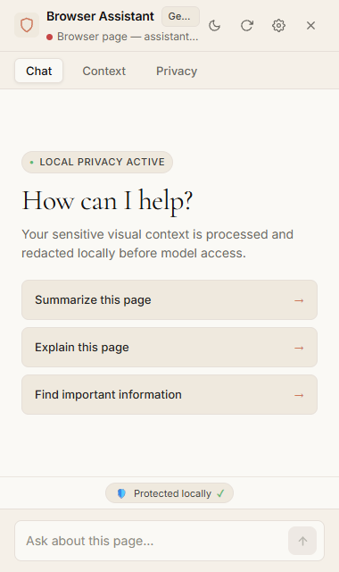
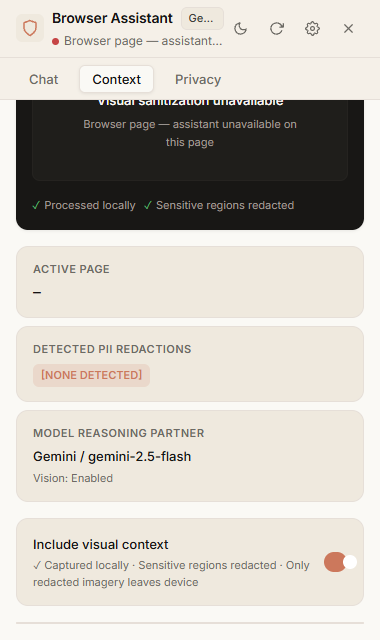
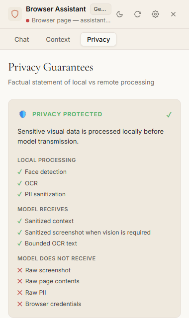
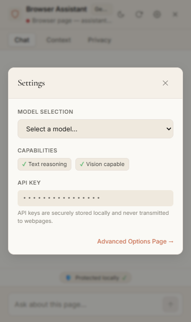

Your browser assistant shouldn't need to see everything.
A privacy-preserving Chrome assistant that performs device-local perception, MediaPipe face redaction, and OCR before sending sanitized context to AI models. Safe, grounded, and transparent.
AI agents need context. But context contains your private life.
Modern browser automation requires understanding what is on screen. However, granting external cloud models unrestricted access to your viewport creates severe security and data leakage liabilities.
Raw Viewport Exposure
Conventional browser agents upload full-resolution screenshots directly to model providers. Unredacted personal photos, family portraits, bank balances, and open conversation tabs are exposed over the network.
Unsanitized DOM Leaks
Scraping raw HTML or accessibility trees passes unmasked email addresses, phone numbers, auth session tokens, and credit card inputs to third-party cloud LLM providers without user awareness.
Unrestricted Agent Execution
Many experimental agents run arbitrary JavaScript (eval) or arbitrary CSS/XPath queries. Hallucinations or prompt injections can mutate sensitive accounts or leak browser cookies.
The AI sees less.
By executing computer vision, face redaction, and PII sanitization locally before the model request is formed, we minimize data transmission to the absolute structural minimum.
- ✕ Raw screenshots sent to cloud LLM
- ✕ Passwords & PII exposed in model payloads
- ✕ Model generates arbitrary DOM code
- ✓ Raw screenshot never transmitted (redacted PNG only if vision enabled)
- ✓ OCR run locally via WebAssembly on redacted canvas
- ✓ Actions bound to strictly validated synthetic IDs
Privacy is part of the execution loop.
Every perception cycle flows through a deterministic, fail-closed pipeline. The model only receives sanitized abstractions, and actions are validated against an authoritative generation counter.
DOM Perception
Content script scans visible interactive elements (buttons, inputs, links) and assigns page-owned identifiers.
content.jsIn-Memory Capture
Service worker captures viewport in memory and immediately routes it to an isolated sandbox document.
captureVisibleTabLocal Computer Vision
MediaPipe BlazeFace runs in WebAssembly to detect human faces and applies an opaque canvas redaction fill.
MediaPipe WASMLocal OCR Processing
Tesseract WebAssembly runs strictly on the redacted canvas to extract bounded local text (<500 chars).
Tesseract WASMPII Sanitization
DOM and OCR text are scanned for regex patterns and replaced with synthetic tokens ([EMAIL REDACTED]).
Model Dispatch
Sanitized context is routed to the configured provider (Gemini, Groq, OpenRouter, or Local Model).
Provider AdapterAction Firewall
The model's proposed intent is validated: allowed action (click/type/scroll), valid generation, target is not a password field.
validate.jsSafe DOM Execution
Synthetic events dispatch to the grounded DOM node, followed by mandatory re-observation and loop detection.
execute.jsDevice-local protections before network access.
We don't rely on policy promises or cloud redaction filters. The privacy barrier runs directly inside your browser process.
Local Face Detection
MediaPipe BlazeFace executes locally via WebAssembly inside an isolated Chrome Offscreen Document. Detected human faces are masked with solid fills on a local HTML canvas before any visual payload is constructed.
Local WebAssembly OCR
Tesseract.js extracts text on-device. Crucially, OCR runs exclusively on the already-redacted canvas, ensuring masked sensitive visual regions can never produce OCR tokens. Raw OCR is strictly bounded.
Category Token Sanitization
Emails, telephone numbers, credit card sequences, and sensitive DOM input attributes are identified client-side and substituted with synthetic markers ([EMAIL REDACTED]). The model reasons over structure, not secrets.
Generation Isolation
Every page navigation or DOM state shift increments a monotonic generation counter. Context or model actions from previous generations are rejected immediately (STALE_GENERATION), preventing stale execution races.
Page-Owned ElementRegistry
The AI never injects CSS or XPath selectors. Instead, interactive elements are registered into a local map (el_1..el_N). The grounding layer maps intents back to active, verified DOM nodes.
Strict Action Firewall
Actions are strictly restricted to click, type, and scroll. Dynamic execution (eval, new Function), DevTools commands, and extension API access are blocked by invariant.
What the AI actually receives.
Inspect the exact sanitized payload dispatched to the model. The raw webpage never leaves your machine.
{
"tabId": 114845892,
"generation": 3,
"url": "https://example.com/portfolio",
"sanitizedText": "Welcome to [NAME REDACTED]'s page. Contact me at [EMAIL REDACTED] or connect on LinkedIn.",
"detections": [
{ "type": "NAME", "confidence": 0.95 },
{ "type": "EMAIL", "confidence": 0.99 }
],
"elements": [
{ "id": "el_1", "role": "link", "text": "About", "bounds": [120, 24, 60, 20] },
{ "id": "el_14", "role": "link", "text": "Skills", "bounds": [190, 24, 55, 20] },
{ "id": "el_22", "role": "button", "text": "Contact", "bounds": [260, 20, 80, 28] }
],
"visualArtifact": "data:image/png;base64,...[REDACTED_FACE_CANVAS_ONLY]",
"rawScreenshotExposed": false,
"rawOcrExposed": false
}Visual Privacy Verification
Screenshots are held strictly in browser memory. MediaPipe places an opaque bounding rectangle over detected facial landmarks before the image is encoded. If a text-only model is selected, zero visual bytes are transmitted.
ElementRegistry Binding
Target el_14 resolves directly to the DOM <a href="#skills"> node. The model cannot query external elements or inject arbitrary script tags.
Authoritative Generation Sync
Every request carries generation=3. If the page navigates, the background worker discards any arriving model intent as stale.
The model proposes. The firewall verifies.
Browser execution is isolated behind an authoritative validation layer. No arbitrary scripts, no ungrounded clicks, and no runaway loops.
-
clickDispatches syntheticpointerdown → mousedown → mouseup → clicksequence to groundedel_Xtarget. -
typeFocuses input and emits trustedinputandchangeevents. Password fields are blocked. -
scrollSmooth scroll within window bounds (up,down) to reveal interactive viewport content.
-
eval() / JSArbitrary code execution,new Function, and<script>injection are permanently prohibited. -
Arbitrary SelectorsRaw CSS selectors or XPath strings from the model are rejected immediately by the grounding layer. -
Extension APIsModel cannot access cookies, passwords, history, browser extensions, or Chrome DevTools protocol.
Pure client-side execution. Zero intermediate servers.
The entire perception, sanitization, grounding, and firewall runtime runs directly within Google Chrome Manifest V3 boundaries.
┌────────────────────────────────────────────────────────────────────────────────────────┐
│ USER / BROWSER INTERACTION │
│ [ User Request: "Go to his Skills section" ] │
│ │ │
│ ▼ │
│ ┌──────────────────┐ │
│ │ ACTIVE DOM │ │
│ └─────────┬────────┘ │
└────────────────────────┼───────────────────────────────────────────────────────────────┘
│
┌────────────────┴────────────────────────┐
▼ ▼
┌──────────────────────────────┐ ┌───────────────────────────────────────┐
│ DOM PERCEPTION (content.js) │ │ SCREENSHOT CAPTURE (background.js) │
│ - Traverses interactive DOM │ │ - Captures viewport in memory via │
│ - Registers nodes to el_1..N │ │ chrome.tabs.captureVisibleTab() │
└──────────────┬───────────────┘ └──────────────────┬────────────────────┘
│ │
└──────────────────┬─────────────────┘
▼
┌────────────────────────────────────────────────────────────────────────────────────────┐
│ LOCAL PRIVACY ENGINE (Chrome Offscreen Document Sandbox) │
│ │
│ ┌─────────────────────┐ ┌────────────────────┐ ┌───────────────────────┐ │
│ │ MediaPipe BlazeFace │──▶│ Canvas Redaction │──▶│ Tesseract.js Local │ │
│ │ (WebAssembly) │ │(Solid Box Over Face│ │ OCR on Redacted View │ │
│ └─────────────────────┘ └────────────────────┘ └───────────┬───────────┘ │
│ │ │
│ ┌─────────────────────────────────────────────────────────┐ │ │
│ │ PII Detection & Context Sanitization (content.js) │◀───┘ │
│ │ - Regex tokenization ([EMAIL REDACTED], [PHONE REDACTED])│ │
│ │ - Bounds OCR text length (<500 chars) │ │
│ └──────────────────────────┬──────────────────────────────┘ │
└──────────────────────────────┼─────────────────────────────────────────────────────────┘
│
│ [ STRICT NETWORK BOUNDARY ]
│ - Raw screenshot: NEVER TRANSMITTED
│ - Raw OCR text: NEVER TRANSMITTED
▼
┌────────────────────────────────────────────────────────────────────────────────────────┐
│ MODEL PROVIDER ADAPTER (Privileged Service Worker) │
│ Google Gemini / Groq / OpenRouter / Local Model │
│ - Receives sanitized text tokens & redacted visual artifact │
│ - Returns single structured JSON intent: { type: "click", elementId: "el_14" } │
└──────────────────────────────┬─────────────────────────────────────────────────────────┘
│
▼
┌────────────────────────────────────────────────────────────────────────────────────────┐
│ GROUNDING & FIREWALL ENGINE (content.js) │
│ - ElementRegistry resolves el_14 to active <a href="#skills"> node │
│ - Action Firewall verifies: allowed action, generation fresh, tab active │
│ - Dispatches safe synthetic event sequence & trigger re-observation │
└────────────────────────────────────────────────────────────────────────────────────────┘
Sub-millisecond safety. Zero data leaks.
Measured in Google Chrome Manifest V3 using automated Puppeteer E2E harnesses and regression suites.
Install in Google Chrome in under two minutes.
Distributed as a verified Manifest V3 extension. No compilation or node server required to run.
Get the Extension
Clone the repository or download the source folder directly from GitHub.
git clone https://github.com/SAMIHZS/SIH2026.git
Open Extensions
In Google Chrome, navigate to the extensions management console.
chrome://extensions
Enable Developer Mode
Toggle the Developer mode switch in the upper-right corner of the page.
Click Load Unpacked
Click the Load unpacked button in the top-left toolbar.
Select Folder
Select the extension directory from your cloned/extracted repository.
Pin the Extension
Click Chrome's puzzle icon on your toolbar and pin SIH Privacy Assistant.
Configure Provider
Right-click the icon → Options to choose Gemini, Groq, or OpenRouter.
Open Side Panel
Open Chrome's Side Panel, select Privacy Assistant, and enjoy private browsing!
The extension interface.
Explore the real Chrome extension sidebar. Built with our editorial warm cream canvas, coral action buttons, and dark product consoles for full perception transparency.




Frequently Asked Questions
Clear, factual answers regarding privacy boundaries, models, and security mechanics.
[EMAIL REDACTED]), a list of registered interactive element targets (el_1..el_N), bounded OCR text (<500 chars), and—only if vision is enabled—a locally redacted screenshot where human faces are covered by solid fills.
captureVisibleTab exists solely in browser memory and is transferred directly to an isolated Chrome Offscreen Document. The unredacted screenshot is never saved to disk and never transmitted over the network.
eval, new Function, script tags, and arbitrary CSS selectors. The model can only propose click, type, or scroll on page-registered element IDs. Password inputs are blocked unconditionally.
chrome.storage.local.
STALE_GENERATION) without touching the new page.
Give your browser an assistant. Not unrestricted access.
Experience a browser agent that respects your personal privacy. Built for Chrome Manifest V3 with verified client-side protections.